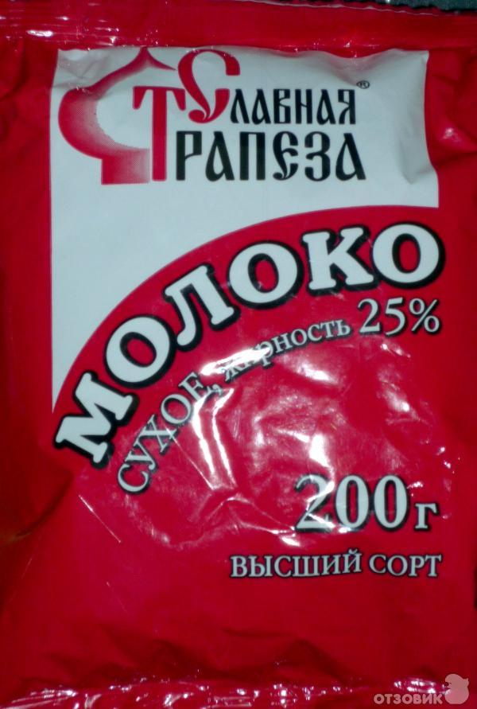
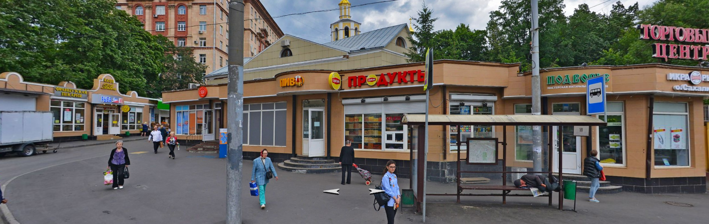

Рекомендации по продуктам (где купить/что купить/как упаковать)
Table of Contents
- 1. Все финансовые расходы записывайте!
- 2. Расфасофка круп
- 3. Сахар и соль
- 4. Лимоны в сахаре
- 5. Геркулес
- 6. Рис
- 7. Любую гречку дороже 50руб с разумным ценником
- 8. Чечевица
- 9. Спагетти
- 10. Сухое молоко
- 11. Колбаса
- 12. Сыр на завтрак
- 13. TODO Сыр на перекус (ссылка на магазин устарела)
- 14. Изюм
- 15. Шоколад
- 16. Орехи
- 17. Сухари
- 18. Сладости
- 19. Магазины
1 Все финансовые расходы записывайте!
Потом всё усредним и рассчитаемся. ТЕМ, КТО ПОКУПАЕТ СЫР И КОЛБАСУ: чтобы лишний раз не бегать в магазин, очень желательно прийти со своими весами и взвесить лично покупаемый продукт. Важно, чтобы общий вес был равен тому, что написано у вас в таблице в колонке "weight".
2 Расфасофка круп
Крупы фасуют по разам (см. в таблице колонку "portion"). Крупа засыпается в полиэтиленовый пакет, который обматывается скотчем, затем на бумажке пишут примерно так: "Геркулес, завтрак 360г", или "Рис, ужин 720г". Обратите внимание, что вес крупы на завтрак меньше, чем вес крупы на ужин. Их путать не надо!!! Дальше мотают скотч поверх бумажки, таким образом получаем плотный кулек с бумажкой под скотчем.
3 Сахар и соль
3.1 Фасуется по бутылкам
Плотность утрамбованного сахара равна плотности воды.
4 Лимоны в сахаре
Берётся сахар и лимоны в пропорции 1 к 1 (для готового продукта 1080гр нужно 540гр лимнов и 540гр сахара). Лимоны нарезаются на "кружочки", затем каждый "кружочек" на "четвертинки", после чего их нужно смешать с сахаром в отдельной посуде. Подождать, пока лимоны пустят сок, а сахар растает. Получившуюся массу залить в подходящую бутылку, желательно с широким горлышком (чтобы было удобно как заполнять бутылку, так и доставать из неё лимоны в походе).
5 Геркулес
Традиционный геркулес марки "Русский продукт". Смотри расфасофку круп.
6 Рис
Рис круглозерный с мутными зернами, но без надписи "Кубань" на упаковке. Смотри расфасофку круп.
7 Любую гречку дороже 50руб с разумным ценником
Например "Мистраль", "Увелка", "Националь" подойдут. Смотри расфасофку круп.
8 Чечевица
Чечевица без надписи "Для супов" на упаковке. Жалательно крупную, не рассыпчатую. Лучше всего подойдёт зеленая. Подойдут "Мистраль", "Вкусвилл" и т.п. ("Каждый день" лучше не брать). Смотри расфасофку круп.
9 Спагетти
Спагетти N3, Barilla или Federici. Паковать так же, как и крупы. Смотри расфасофку круп.
10 Сухое молоко
Сухое молоко надо брать марки "Славянская трапеза" в расфасовке 200г. На один завтрак по раскладке нужно 225г, а уменьшение порции молока с 225 до 200г приведет к уменьшению порции на участника с 25 до 22г. Это не критично, посколько раскладка будет 637-ми грамовая. Таким образом одна 200г пачка уходит за один завтрак. Пачку сухого молока надо замотать скотчем. Молоко можно купить тут. Если вместо 200грамовых пачек будут 400грамовые, то возьмите их в два раза меньше.

Figure 1: Сухое молоко Славянская трапеза
10.1 Сухое молоко в кофе
См. пункт "Сухое молоко". Отличается только фасофка. Надо засыпать в подходящего размера бутылку. Если ничего подходящего не находится - пишите.
11 Колбаса
В Ремите продается отличная колбаса. Называется "Миланская". Купить её можно в Ремите на Войковской.
12 Сыр на завтрак
"Императорский" сыр (обычно продаётся в круглой упаковке). Возможно есть там же, где и сыр на перекус. Целиком упаковка весит 2кг, поэтому нужно попросить отрезать половину (а точнее 1080гр). Если сыра нет в этом магазине, можно попробовать купить в ближайшем (тут, вход под вывеской "Французская пекаря" - с правой стороны есть сыр). На разовые порции сыр резать не нужно - берите в поход целым куском! Хранить сыр нужно не в пакете, а в ткани (подойдёт любая чистая).
13 TODO Сыр на перекус (ссылка на магазин устарела)
Есть вкусный твердый сыр из Алтая. Называется "Джугас". Купить его можно (ссылка устарела).
14 Изюм
Можно купить там же, где и сыр на перекус. Хорошо если получится купить смесь из разного винограда (темного / светлого). После покупки изюм нужно тщательно промыть, высушить и сложить в бутылку подходящего размера.
15 Шоколад
Насте В. уже даны подробные поручения. Частично продублирую: покупаем молочный и горький шоколад. Часть шоколада можно сделать из Lindt, Heidi, Schogetten и т.п. Настя В. хочет попробовать купить в поход Rioba.
16 Орехи
Орехи можно попробовать купить тут. Если в группе есть аллергики на орехи, то на их долю нельзя покупать грецкие (но лучше уточнять лично). Нейтральными являются кешью, кедровые и фисташки. Если нет аллергии, то можно еще миндаль, грецкие, фундук и бразильский орех. Порции орехов разделить по разам (т.е. если есть несколько видов орехов, их нужно смешать вместе в объеме равном "portion" в таблице), сложить в обычный целлофановый пакет и замотать скотчем.
17 Сухари
Сушим черный «дарницкий» хлеб. Никаких специфических сортов, типа бородинского, не надо. Сечение буханки делится на 4 части. Каждая такая четвертинка после высушивания весит около 10 грамм. В литровый пакет (тетрапак) из под молока при плотной упаковке помещается около 360 грамм сухарей (36 четвертинок). Заполненный сухарями тетрапак обмотать скотчем.
Купить такой хлеб можно в Магнолии (Волоколамское ш., 15/22).
Подойдёт дарницкий "Дедовский" нарезной ("дарницкие" разные бывают - этот не крошится в руках и прекрасен для сухарей). Может быть и любой другой, главное, чтобы он не крошился в руках и держал форму.
Духовка. 140 градусов. На противне, без масла. 25 минут с каждой стороны (всего 50 минут).
Если не будет хватать тетрапаков - обращайтесь.

18 Сладости
Покупаем всегда тут. Нужно купить: "Узбекскую халву", "Кос. халву", "Фисташковую халву" - лучше всего всех по 2 шт. Можно сразу попросить поделить по 360гр (1 порция). Если чего-то не будет, то желательно позвонить завхозу. Так же "кос. халва" продаётся там же, где и сыр на перекус. Каждую порцию сладкого по 360гр положить в пакет и замотать её скотчем.
19 Магазины
19.1 Ленинградский проспект, 73Ас3 ("Продукты")

Можно купить:
19.1.1 Сухофрукты (изюм/курагу/чернослив)
19.1.2 Орехи
19.1.3 Сладости (кос./узбекскую/фисташковую халву)
19.2 м. Водный стадион Панорама Yandex
Метро Водный Стадион, выход 1. От выхода из метро повернуть налево и дойти до входа на крытый рынок ТК "У ВОДНОГО" (см. ссылку). По правой стороне (примерно в середине торгового ряда) будет лавочка с сухофруктами и орехами в которой левая стенка зеркальная(там зеркала стоят).
Номер телефона продавца: +7(905)540-93-93 (Баходур)
В этой палатке можно купить:
- Все сухофрукты
- Орехи
- Шиповник из Таджикистана